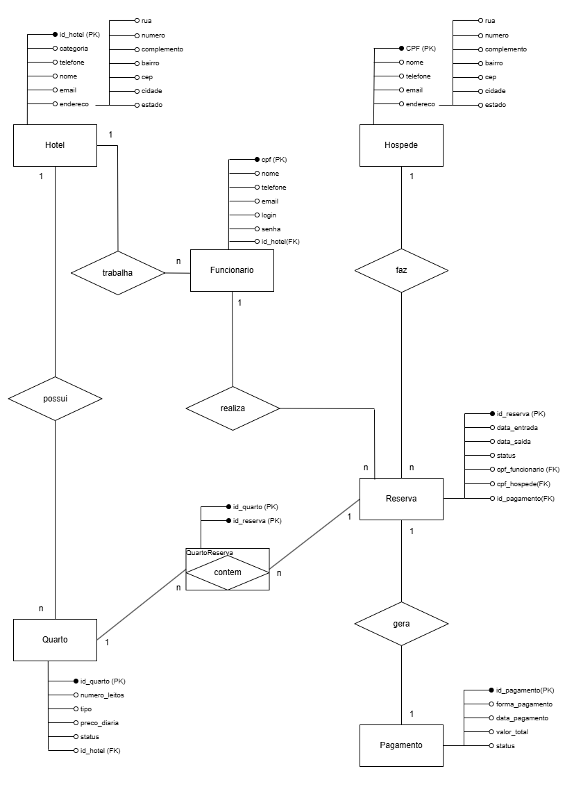

Meus Projetos
Projetos da Faculdade
Modelagem de Banco de Dados
Trabalho acadêmico com diagrama entidade-relacionamento (MER) e criação de tabelas SQL. Desenvolvido com base em um sistema hoteleiro.
Ver Trabalho
×

Site Pessoal em HTML/CSS
Desenvolvido como parte da disciplina de Desenvolvimento Web, com uso de HTML5, CSS3 e boas práticas de estruturação.
</> Ver CódigoProjetos Pessoais
Projeto React + NextJs
Projeto sobre timer para estudo em Pomodoro, projeto com fins educativos na especialização de Linguagens web (em desenvolvimento...)
</> Ver CódigoProjeto Java 360°
Projeto desenvolvido durante o curso Java 360°, aplicando conceitos de orientação a objetos.
Ver no GitHub